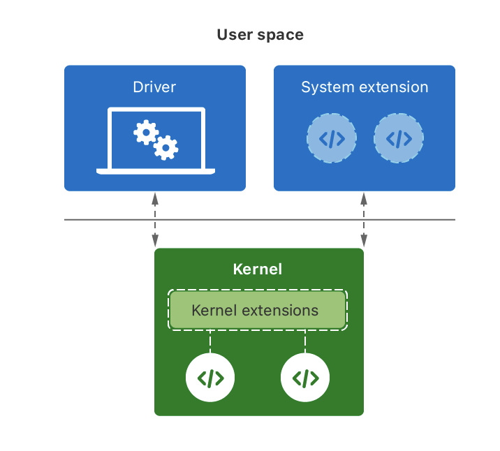

Differences_in_Kernel_Extension_Mac
Differences in drivers, kernel extension, and system extension
Overview
Create drivers, system extensions, and kernel extensions for specific low-level system services.
- A DriverKit extension (dext) manages the communication between your company’s hardware device and the rest of the system.
- A system extension implements features that require kernel-level cooperation, such as custom security and network behaviors.
- A kernel extension (kext) supports any low-level services that cannot be implemented using a dext or system extension.

The System Extensions framework supports a class of kernel-level features that previously required kexts. System extensions run in user space and interact with the kernel to perform specific tasks. For example, an endpoint-security system extension monitors system events for potential security threats.
In macOS 11 and later, the kernel doesn’t load a kext if an equivalent System Extension solution exists. You may continue to use kexts in macOS 10.15 and earlier.
Last modified on 2024-08-15